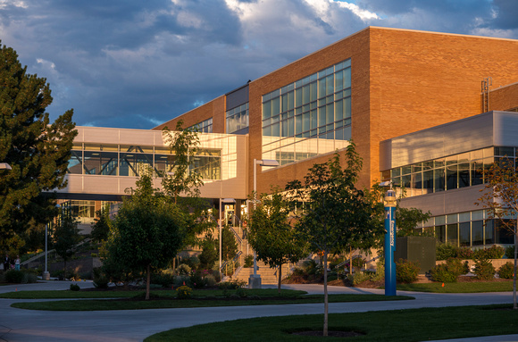

About this University

BYU-Idaho is distinctive in the world of higher education
because it is student-focused by design. That means we put the
students' success at the heart of all we do. The fruit of this
focus can be found in what students accomplish here and in the
following five educational emphases:
Because of the shared commitment to live the gospel by
everyone on campus—student, faculty, and employees—BYU-Idaho is
a comfortable place to learn and grow as a disciple of Jesus
Christ.
BYU-Idaho faculty members are not only experts in their
respective fields, but they also put teaching and mentoring
students as their top priority. That translates into more
face-to-face time and individual help for you because they care
most about helping you learn and succeed.
From internships to practical assignments to career
preparation, BYU-Idaho classes are designed to give you
real-world experience. So are the thousands of opportunities to
participate in a wide array of activities outside the classroom.
You'll find opportunities to get involved at every level of
responsibility, whether you choose sports, outdoor activities,
the arts, service, and more. These programs are organized and led
by students who then develop skills and confidence valuable to
employers.
Whether you're an academic rock star or the equivalent of the
guy playing the triangle in a garage band, BYU-Idaho will help
you discover and achieve your potential.
BYU-Idaho operates on the imperative to offer a high-quality
education at a low cost to as many students as possible. That
translates into big savings for you.
Prospective Students
There's no better way to feel the 'Spirit of Ricks' than by
visiting BYU-Idaho's campus in person. Campus tours are provided on
the hour from 9 A.M. to 3 P.M. Monday through Friday, except on
Tuesdays from 2-3 P.M. when we are closed for Devotional.
BYU-Idaho's campus tours include a tour hosted by a current
BYU-Idaho student and options to visit with admissions representatives,
other administrative offices, and academic departments during your
visit. We look forward to seeing you at BYU-Idaho! Please request a
prospective student campus tour in advance by calling the Admissions
Office at 208-496-1300 or email us at admissions@byui.edu.
Current Students
Your family and guests are invited to come to campus and get
familiar with BYU-Idaho prior to Get Connected and the start of
school. Our Visit Day Ambassadors will guide you around campus,
answer questions and share with you why they love BYU-Idaho.
Visit Day Tours are available Monday - Friday 9 a.m. - 3 p.m.,
except on Tuesdays from 2-3 p.m. when we are closed for Devotionals.
Register now for a Visit Day Tour! Questions regarding Visit Day
Tours can be directed to visitdays@byui.edu. or by calling
208-496-1420.
Public Tours
Guests and educational groups are welcome to come explore the
changing BYU-Idaho campus. Tours are designed to meet each group's
specific needs. Tour guides are available Monday through Friday,
except holidays and Tuesdays from 2-3 P.M. when we are closed for
Devotional. Please request a campus tour in advance by calling
University Relations at 208-496-3125 or email campustours@byui.edu.